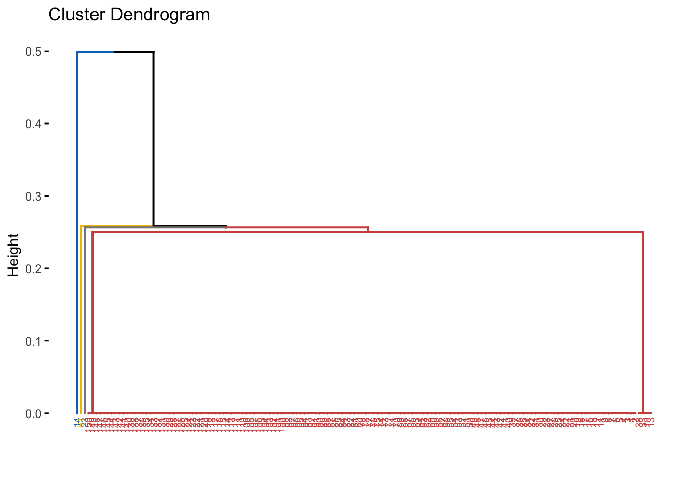

## Import lbraries
import numpy as np
import pandas as pd
from sklearn import datasets
## Import data
iris = datasets.load_iris()
df = pd.DataFrame(data= np.c_[iris['data'], iris['target']],
columns= iris['feature_names'] + ['target'])| sepal length (cm) | sepal width (cm) | petal length (cm) | petal width (cm) | target |
|---|---|---|---|---|
| 5.1 | 3.5 | 1.4 | 0.2 | 0 |
| 4.9 | 3.0 | 1.4 | 0.2 | 0 |
| 4.7 | 3.2 | 1.3 | 0.2 | 0 |
| 4.6 | 3.1 | 1.5 | 0.2 | 0 |
| 5.0 | 3.6 | 1.4 | 0.2 | 0 |
| 5.4 | 3.9 | 1.7 | 0.4 | 0 |
| 4.6 | 3.4 | 1.4 | 0.3 | 0 |
| 5.0 | 3.4 | 1.5 | 0.2 | 0 |
| 4.4 | 2.9 | 1.4 | 0.2 | 0 |
| 4.9 | 3.1 | 1.5 | 0.1 | 0 |
def normalize_col(col):
return (col-col.min())/(col.max()-col.min())
features_df = df.drop('target', axis=1)
normalized_data = features_df.apply(lambda x: normalize_col(x))| sepal length (cm) | sepal width (cm) | petal length (cm) | petal width (cm) |
|---|---|---|---|
| 0.2222222 | 0.6250000 | 0.0677966 | 0.0416667 |
| 0.1666667 | 0.4166667 | 0.0677966 | 0.0416667 |
| 0.1111111 | 0.5000000 | 0.0508475 | 0.0416667 |
| 0.0833333 | 0.4583333 | 0.0847458 | 0.0416667 |
| 0.1944444 | 0.6666667 | 0.0677966 | 0.0416667 |
| 0.3055556 | 0.7916667 | 0.1186441 | 0.1250000 |
| 0.0833333 | 0.5833333 | 0.0677966 | 0.0833333 |
| 0.1944444 | 0.5833333 | 0.0847458 | 0.0416667 |
| 0.0277778 | 0.3750000 | 0.0677966 | 0.0416667 |
| 0.1666667 | 0.4583333 | 0.0847458 | 0.0000000 |
scikit-learn supports {“ward”, “complete”, “average”, “single”}
scikit-learn supports [‘cityblock’, ‘cosine’, ‘euclidean’, ‘l1’, ‘l2’, ‘manhattan’].
linkage_list = ['single', 'complete', 'average', 'weighted', 'centroid', 'median', 'ward']
affinity_list = ['cityblock', 'cosine', 'euclidean', 'l1', 'l2', 'manhattan', 'braycurtis', 'canberra', 'chebyshev',
'correlation', 'dice', 'hamming', 'jaccard', 'kulsinski', 'mahalanobis', 'minkowski', 'rogerstanimoto',
'russellrao', 'seuclidean', 'sokalmichener', 'sokalsneath', 'sqeuclidean', 'yule']Cophenetic correlation is commonly used:
## Import libraries
from scipy.cluster.hierarchy import dendrogram, linkage
from scipy.cluster.hierarchy import cophenet
from scipy.spatial.distance import pdist
## Calculate Cophenetic coefficient for every possible combinations
affinity_col = []
linkage_col = []
coph_coef = []
for a in affinity_list:
for l in linkage_list:
## Create column of affinity metric
affinity_col.append(a)
## Create column of linkage metric
linkage_col.append(l)
## Create column of cophenetic coefficient
try:
Z = linkage(normalized_data, method=l, metric=a)
c, coph_dists = cophenet(Z, pdist(normalized_data, a))
coph_coef.append(c)
except:
coph_coef.append(None)
coph_coef_df = pd.DataFrame(list(zip(affinity_col, linkage_col, coph_coef)),
columns =['Affinity', 'Linkage', 'Coef'])| Affinity | Linkage | Coef |
|---|---|---|
| kulsinski | average | 0.9981284 |
| sokalsneath | average | 0.9978761 |
| kulsinski | single | 0.9969603 |
| russellrao | average | 0.9961201 |
| russellrao | single | 0.9960512 |
| dice | average | 0.9918238 |
| sokalsneath | single | 0.9897271 |
| kulsinski | weighted | 0.9877838 |
| sokalsneath | weighted | 0.9875723 |
| russellrao | weighted | 0.9782891 |
Since scikit-learn supports a smaller subset of affinity metrics, let’s see which ones:
sklearn_affinity = ['cityblock', 'cosine', 'euclidean', 'l1', 'l2', 'manhattan']
coph_coef_df[coph_coef_df['Affinity'].isin(sklearn_affinity)].sort_values(by='Coef', ascending=False)| Affinity | Linkage | Coef | |
|---|---|---|---|
| 9 | cosine | average | 0.9389399 |
| 8 | cosine | complete | 0.9383165 |
| 10 | cosine | weighted | 0.9373907 |
| 7 | cosine | single | 0.9367462 |
| 18 | euclidean | centroid | 0.8655197 |
| 16 | euclidean | average | 0.8650491 |
| 3 | cityblock | weighted | 0.8630825 |
| 2 | cityblock | average | 0.8619296 |
| 20 | euclidean | ward | 0.8584916 |
| 0 | cityblock | single | 0.8456212 |
from scipy.cluster.hierarchy import fcluster
import matplotlib.pyplot as plt
Z = linkage(normalized_data, method='average', metric='kulsinski')
dendrogram(
Z,
truncate_mode='lastp', # show only the last p merged clusters
p=12, # show only the last p merged clusters
show_leaf_counts=True,
leaf_rotation=90.,
leaf_font_size=12.,
show_contracted=True, # to get a distribution impression in truncated branches
)## {'icoord': [[65.0, 65.0, 75.0, 75.0], [55.0, 55.0, 70.0, 70.0], [45.0, 45.0, 62.5, 62.5], [35.0, 35.0, 53.75, 53.75], [105.0, 105.0, 115.0, 115.0], [95.0, 95.0, 110.0, 110.0], [85.0, 85.0, 102.5, 102.5], [44.375, 44.375, 93.75, 93.75], [25.0, 25.0, 69.0625, 69.0625], [15.0, 15.0, 47.03125, 47.03125], [5.0, 5.0, 31.015625, 31.015625]], 'dcoord': [[0.0, 0.0, 0.0, 0.0], [0.0, 0.0, 0.0, 0.0], [0.0, 0.0, 0.0, 0.0], [0.0, 0.0, 0.0, 0.0], [0.0, 0.25, 0.25, 0.0], [0.0, 0.25, 0.25, 0.25], [0.0, 0.25, 0.25, 0.25], [0.0, 0.3999999999999989, 0.3999999999999989, 0.25], [0.0, 0.40725623582766335, 0.40725623582766335, 0.3999999999999989], [0.0, 0.40900900900900794, 0.40900900900900794, 0.40725623582766335], [0.0, 0.6674336848833502, 0.6674336848833502, 0.40900900900900794]], 'ivl': ['13', '60', '22', '149', '148', '147', '146', '(139)', '37', '32', '9', '12'], 'leaves': [13, 60, 22, 149, 148, 147, 146, 287, 37, 32, 9, 12], 'color_list': ['g', 'g', 'g', 'g', 'g', 'g', 'g', 'g', 'g', 'g', 'b']}plt.show()max_d = 50
df['cluster'] = fcluster(Z, max_d, criterion='distance')
df.groupby('cluster')['target'].value_counts()## cluster target
## 1 0.0 50
## 1.0 50
## 2.0 50
## Name: target, dtype: int64## Import libraries
from sklearn.cluster import AgglomerativeClustering
## Hierarchical clustering
groups = AgglomerativeClustering(n_clusters=3, affinity='cosine', linkage='average')
df['sk_cluster'] = groups.fit_predict(normalized_data)
df.groupby('sk_cluster')['target'].value_counts()## sk_cluster target
## 0 1.0 50
## 2.0 50
## 1 0.0 49
## 2 0.0 1
## Name: target, dtype: int64dist() supports: “euclidean”, “maximum”, “manhattan”, “canberra”, “binary” or “minkowski”
hclust() supports: “ward.D”, “ward.D2”, “single”, “complete”, “average” (= UPGMA), “mcquitty” (= WPGMA), “median” (= WPGMC) or “centroid” (= UPGMC).
library(data.table)
distance_list = list()
linkage_list = list()
coph_list = list()
for (d in c("euclidean", "maximum", "manhattan", "canberra", "binary", "minkowski")) {
for (l in c("ward.D", "ward.D2", "single", "complete", "average", "mcquitty", "median","centroid")) {
distance_list <- c(distance_list, d)
linkage_list <- c(linkage_list, l)
distances <- dist(py$normalized_data, method=d)
hcl <- hclust(distances, method=l)
d2 <- cophenetic(hcl)
#print(cor(distances, d2))
coph_list <- c(coph_list, cor(distances, d2))
}
}
res_df = NULL
res_df = do.call(rbind, Map(data.frame, Distance=distance_list, Linkage=linkage_list, Coph=coph_list)) %>% arrange(desc(Coph))res_df %>% kable()| Distance | Linkage | Coph |
|---|---|---|
| binary | average | 0.9954216 |
| binary | centroid | 0.9953446 |
| binary | median | 0.9915078 |
| binary | mcquitty | 0.9778637 |
| binary | single | 0.9775996 |
| canberra | average | 0.9482878 |
| canberra | centroid | 0.9444549 |
| canberra | mcquitty | 0.9418244 |
| canberra | single | 0.9376605 |
| binary | ward.D2 | 0.9225534 |
| canberra | median | 0.9187911 |
| canberra | ward.D2 | 0.9122727 |
| canberra | complete | 0.9039845 |
| canberra | ward.D | 0.8950139 |
| binary | ward.D | 0.8887405 |
| manhattan | centroid | 0.8667134 |
| euclidean | average | 0.8650491 |
| minkowski | average | 0.8650491 |
| manhattan | mcquitty | 0.8630825 |
| euclidean | centroid | 0.8629415 |
| minkowski | centroid | 0.8629415 |
| manhattan | average | 0.8619296 |
| binary | complete | 0.8611782 |
| manhattan | ward.D2 | 0.8607663 |
| euclidean | ward.D2 | 0.8584916 |
| minkowski | ward.D2 | 0.8584916 |
| manhattan | median | 0.8507094 |
| manhattan | ward.D | 0.8487168 |
| euclidean | ward.D | 0.8461945 |
| minkowski | ward.D | 0.8461945 |
| manhattan | single | 0.8456212 |
| euclidean | median | 0.8450047 |
| minkowski | median | 0.8450047 |
| euclidean | single | 0.8441740 |
| minkowski | single | 0.8441740 |
| maximum | average | 0.8391428 |
| maximum | mcquitty | 0.8325664 |
| maximum | centroid | 0.8292697 |
| euclidean | mcquitty | 0.8273731 |
| minkowski | mcquitty | 0.8273731 |
| maximum | ward.D2 | 0.8254128 |
| maximum | median | 0.8063678 |
| maximum | single | 0.8044841 |
| maximum | ward.D | 0.8007950 |
| maximum | complete | 0.7717549 |
| manhattan | complete | 0.7302247 |
| euclidean | complete | 0.6783791 |
| minkowski | complete | 0.6783791 |
Agglomerative clustering:
library(cluster)
library(factoextra)
d <- dist(py$normalized_data, method='binary') ## Calculates distance
hcl <- hclust(d, method='average') ## Hierchical clustering
plot(hcl)fviz_dend(hcl, cex = 0.5,
k = 4,
palette = "jco") # Color palette
sub_grp <- cutree(hcl, k = 4)
py$df %>%
mutate(cluster = sub_grp) %>%
group_by(cluster, target) %>%
summarise(Freq = n())## # A tibble: 6 x 3
## # Groups: cluster [4]
## cluster target Freq
## <int> <dbl> <int>
## 1 1 0 48
## 2 1 1 49
## 3 1 2 50
## 4 2 0 1
## 5 3 0 1
## 6 4 1 1Divisive clustering
## Import library
library(factoextra)
## Clustering
res.diana <- diana(py$normalized_data, stand = TRUE)
## Plot the dendrogram
fviz_dend(res.diana, cex = 0.5,
k = 4, # Cut in four groups
palette = "jco") # Color palette